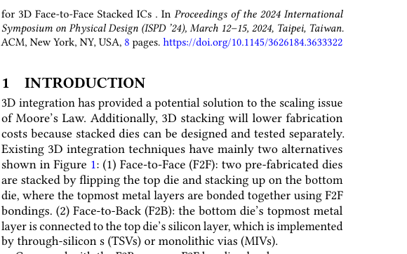
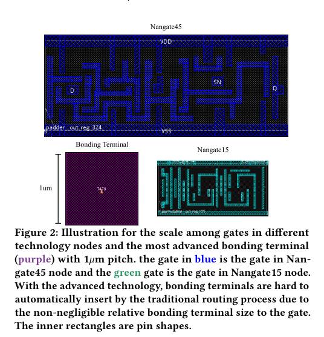
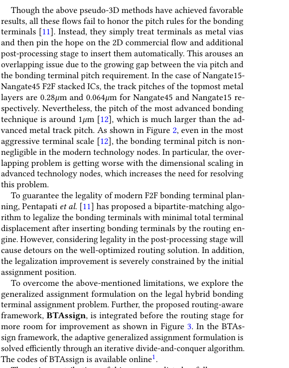
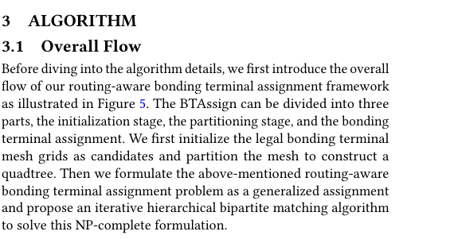
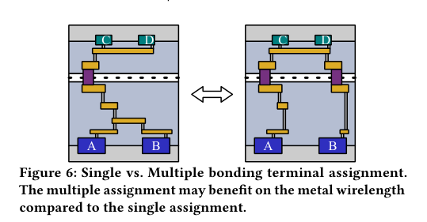
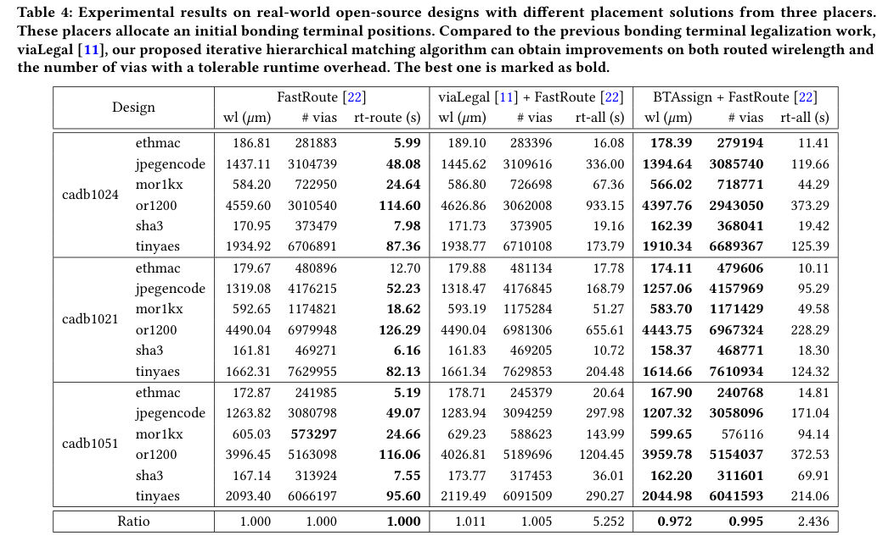

本报告由大模型自动生成，可能存在理解、归纳或数据转述错误；请以原论文为准。 Routing-aware Legal Hybrid Bonding Terminal Assignment for 3D Face-to-Face Stacked ICsSiting Liu, Jiaxi Jiang, Zhuolun He, Ziyi Wang, Yibo Lin, Bei Yu, Martin D. F. Wong · Proceedings of the 2024 International Symposium on Physical Design · 2024 · 原文 · PDF 报告模型：gemini-3.1-pro-preview / high 这是一篇针对 2024 年国际物理设计研讨会（ISPD '24）论文《Routing-aware Legal Hybrid Bonding Terminal Assignment for 3D Face-to-Face Stacked ICs》的详细解析。本文按论文结构逐节展开，在介绍具体技术前会先构建必要的背景知识，并阐明作者的设计动机、方法和结论。 背景补充与系统全貌在正式进入论文内容前，我们需要建立关于 3D 芯片集成（3D ICs）和物理设计的最小背景。 现代集成电路（IC）由于摩尔定律的放缓，越来越难在单层二维（2D）硅片上无限制地缩小晶体管。为此，业界引入了 3D 封装与集成技术，将原来在一个平面上的芯片拆分成多块较小的芯片（Die），然后将它们像盖楼一样垂直堆叠起来。本文研究的具体对象是 Face-to-Face (F2F) 3D 堆叠集成电路。在 F2F 结构中，两块预先制造好的芯片（分别称为顶层 Die 和底层 Die）面对面贴合，它们各自最顶层的金属布线层直接相连。 在这个系统中，两层芯片之间需要通过物理触点来进行数据和电信号的流动，这些触点在本文中被称为 Hybrid Bonding Terminals（混合键合终端，简称键合终端）。这构成了本文的核心硬件约束：
本文探讨的正是芯片物理设计流程中的“终端分配（Terminal Assignment）”层级。 过去的方法要么依赖普通的 2D 布线工具瞎蒙，要么在布线完成后再去强行挪动重叠的终端（即后处理合法化）。本文作者认为，后处理会破坏已经优化好的布线路径。因此，本文提出了一种名为 BTAssign 的框架，在布线操作开始之前，就结合对布线长度的预测，把键合终端合法、最优地分配给跨层互连的网络。 一、 Introduction (引言)引言部分主要介绍了问题的硬件背景和现有技术的局限性。 作者首先对比了三种主流的 3D 芯片互连技术（对应论文图 1）： 
基于上述硬件优势，F2F 混合键合成为目前最有希望的扩展方案（已被应用于 AMD 的 3D V-Cache 和 Intel 的 Foveros 等商业产品中，原文此处引用了相关实例作为背景依据）。 核心问题引出：随着技术节点演进，逻辑门越来越小，但键合终端的缩小速度跟不上（参考论文图 2 中紫色巨大的键合终端与极小的 15nm/45nm 逻辑门对比）。传统的 EDA 工具通常先进行 3D 划分（决定哪个逻辑门在哪一层），然后直接布线。现有的伪 3D 流程（如 Shrunk2D、Compact2D 等，作者软件层面的设计选择回顾）通常忽略了键合终端的物理间距规则，导致严重重叠。近期的一项工作（Pentapati 等人提出的  为此，作者提出了 BTAssign 框架（见图 3），将合法化和终端分配从“布线后”前置到“布线前”，并首次将其建模为带有布线感知（Routing-aware）的广义分配问题，以求同时兼顾物理合法性和布线线长性能。  二、 Preliminaries (预备知识与问题定义)本节进一步明确了硬件约束，并给出了严格的数学定义。 2.1 3D Face-to-Face Stacking (3D 面对面堆叠约束) 作者解释了一个关键的制造工艺约束（硬件强制）：为了保证两片晶圆键合时的机械对称性和连接可靠性，键合终端的分布最好是整齐均匀的。因此，区别于以往文献中可以随意放置终端的做法，本文的算法强制要求键合终端只能从一个预先定义好的、均匀分布的合法网格（Mesh grids）候选集中选取。 2.2 Problem Formulation (问题定义) 作者在此给出了贯穿全文的关键定义：
三、 Algorithm (算法设计)本节是论文的核心，详细推导了如何将上述定义转化为可计算的数学模型，以及如何解决计算复杂度过高的问题。 3.1 Overall Flow (整体流程) 参考论文图 5，BTAssign 框架包含三步：1. 初始化合法的键合终端网格候选集；2. 使用四叉树（Quadtree）对空间进行递归划分；3. 执行广义分配算法。  3.2 Explored Generalized Assignment (广义分配问题建模) 作者将问题建模为 广义分配问题（Generalized Assignment Problem, GAP）。在这个模型中，终端相当于“资源/代理”，网络相当于“任务”。 作者定义了布线成本预测函数 ：表示将一组终端 分配给网络 后所产生的布线成本。为了在布线前快速评估，作者采用最小生成树（Minimum Spanning Tree, MST） 的长度来近似代替实际的布线线长（这是算法设计上的经典权衡：用计算便宜的 MST 代替耗时昂贵的实际布线器）。 随后，作者给出了理想状态下的整数规划公式（Formula 1）： 约束条件为：
为什么这个问题极其困难（动机引出）？ 作者指出了一个关键的非线性难题（Formula 2）： 即，为一个网络分配多个终端时的总线长收益，并不等于每个终端单独收益的线性累加（因为多引脚网络的金属线可以复用/合并）。（结合图 6 解释：在某些拓扑下，分配两个终端作为“桥梁”连接不同区域的引脚，比只用一个终端再长距离拉线的总线长更短）。这意味着，要想求得绝对最优解，必须把所有终端组合的成本都提前计算一遍，这在芯片动辄几十万个节点的规模下是引发内存爆炸和计算崩溃的 NP-hard 问题。  为了解决计算不可行的问题，作者做出了算法降级与迭代选择（Equation 3 & Algorithm 1）： 作者放弃了一次性求解多对一的整数规划，转而将其拆解为多轮迭代的二分图匹配（Bipartite Matching）。 在每一轮（第 轮）中，强制每个网络最多只能获取一个新的终端（变量由 变为 ）。这样，成本评估就变成了线性的单对单计算（只需要计算 次）。如果在前一轮中某个网络 已经分配了终端（记录在 中），那么本轮评估新终端 时，会把旧终端和新终端放在一起重新计算 MST 成本。通过限制总迭代轮数 ，控制了最大终端分配数量。 3.3 Hierarchical Bipartite Matching (分层二分匹配) 即使改为单终端迭代，全局 的规模依然太大。因此作者引入了空间数据结构中经典的 四叉树（Quad-tree）进行分治（Divide and Conquer）。
四、 Experiment Results (实验结果)本节验证了 BTAssign 相比于基线方案在布线线长和通孔数量上的优势。 4.1 & 4.2 实验设置与采样机制
4.3 & 4.4 性能评估（核心结论所在） 表 4 是全文最重要的实验数据表，对比了三种流程的布线结果（wl = wirelength线长，# vias = 通孔数量，rt = runtime运行时间）： 
结论解读：
4.5 & 4.6 运行时间剖析与广义模型对比
总结：贯穿全文的主线与局限性主线故事： 这篇文章最初遇到的问题是：在先进的 3D 芯片堆叠中，连接上下两层的“触点（键合终端）”比芯片内部的“电线”粗得多。如果任由软件随意连接，触点就会打架重叠；如果等连完线再去生硬地扒拉触点解决重叠，原本最优的走线就会被扯乱，导致性能变差。 为了解决这个问题，作者提出不要在事后补救，而要在连线（布线）之前就把触点位置分配好。作者先建立了一个数学上完美但算不出来的“广义分配模型”，随后通过两个巧妙的计算机科学手段——把一次性分配拆成一轮一轮地挑（迭代二分匹配），以及把整块大芯片像切蛋糕一样切成无数小方块分别处理（四叉树分治）——最终用很小的计算代价，不仅保证了触点绝对不重叠（合法性），还顺便让后期的金属连线缩短了 1% 到 5%（布线感知）。 关键假设与局限性（不可过度推广之处）：
|